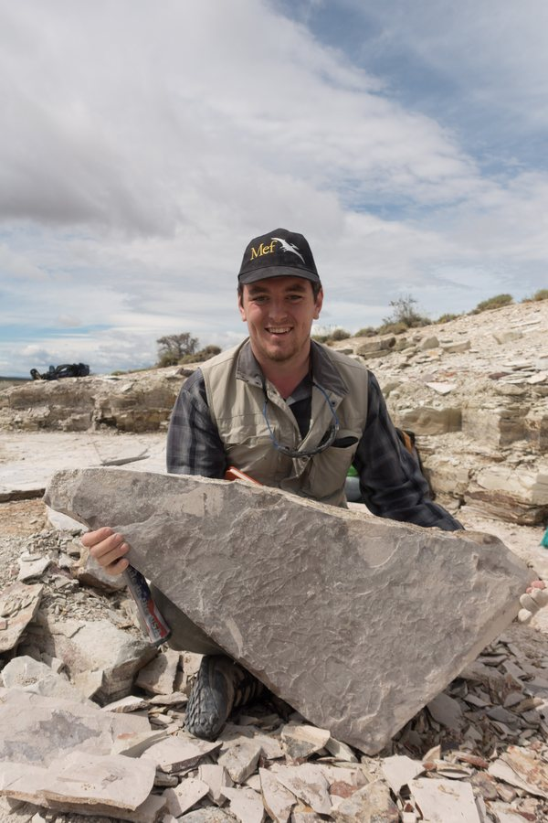

People

Past students
- Elizabeth Wilson
Taxonomy of Neuropteris lindahli White from the Upper Pennsylvanian of Missouri - Paige Liston
Evolution of seed size in Serjania (Paullinieae, Sapindaceae) - Jonas May
Palynology of a Late Pennsylvanian flora from Liberty, Missouri - Michaela Massey
Fossil woods from the Upper Cretaceous of western North America - Ian Lewis
Palynology of a Late Pennsylvanian flora from Liberty, Missouri - Luke Linder
Palynology of a Late Pennsylvanian flora from Liberty, Missouri - Isabella Flemming
Fossil wood from Hornby Island, Canada - Ben Zahnd
Fossil woods from the Upper Cretaceous of western North America - Claire Burch
A preliminary morphotype catalog of a Late Pennsylvanian flora from Liberty, Missouri - Kiara Bradley
Fossil woods from the Upper Cretaceous of western North America - Shane Cavallo
Preparation of fossil cuticles from Late Pennsylvanian plant fossils - Kelly Hendershot
Polyploidy in Solidago nemoralis - Hayley Knapp
A guide to the fossil invertebrates of the Martha Lafite Thompson Nature Sanctuary